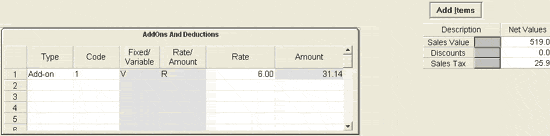
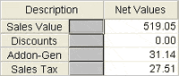
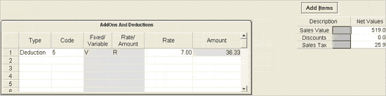
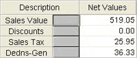
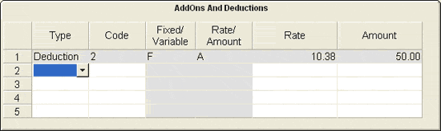

The AddOns And Deductions grid pops up beneath the Item Details grid when you press Ctrl+4 from the billing window.
Note: If fixed add-ons or deductions are catalogued under Sales Factors, then the same are applied by default and can be viewed by pressing Ctrl+4. The add-ons or deductions can be altered as per the requirement, during billing, if they are catalogued as Variable under Sales Factors. Click here to know how to catalogue Add-ons and Deductions.
Add-on is an extra amount, which is added to the total sales value during billing. The add-on details grid displays the add-on values for that particular bill. You can add any number of Add-ons, if catalogued, in a bill.

Type: Select the type (Add-on) from the drop down list.
Code: Select the applicable Add-ons code from the drop down list.
Press Tab and the rest of the details of the grid are populated.
Fixed/Variable: This field indicates whether the selected Add-on is Fixed (F) or Variable (V).
Rate/Amount: This field indicates whether the selected Add-on is applied as a Rate (R) or an Amount (A).
Rate: The rate is displayed. The rate can be changed, if the selected code is of the type Variable (V) and Rate (R).
Amount: The amount is displayed. The amount can be changed, if the selected code is of the type Variable (V) and Amount (A).
The total value of Add-ons is displayed as Addon–Gen at the bottom right corner of the billing window.

Note: In the given grid, position of Addon-Gen indicates whether tax is calculated on the add-on value.
1. Above Sales Tax — The add-on value is considered for tax.
2. Below Sales Tax — The add-on value is not considered for tax.
Addon-Gen: The total value of add-ons is displayed.
Add Items: To enter more items into Item Details grid.
Press Esc to come out of the AddOns And Deductions pop up.
The AddOns And Deductions grid with a fixed Add-on applied as Rate is displayed.
Deduction is an amount, which is deducted from the total sales value during billing. The deduction details grid displays the deduction values for that particular bill. You can add any number of deductions, if catalogued, in a bill.

Type: Select the type (Deduction) from the list.
Code: Select the applicable Deductions code from the list.
Press Tab and the rest of the details of the grid are populated.
Fixed/Variable: This field indicates whether the selected Deduction is Fixed (F) or Variable (V).
Rate/Amount: This filed indicates whether the selected Deduction is applied as a Rate (R) or an Amount (A).
Rate: The rate is displayed. The rate can be changed, if the selected code is of the type Variable (V) and Rate (R).
Amount: The amount is displayed. The amount can be changed, if the selected code is of the type Variable (V) and Amount (A).
The total value of Deductions is displayed as Dedns–Gen at the bottom right corner of the billing window.

Note: In the given grid, position of Dedns-Gen indicates whether the deduction amount is considered for tax calculation.
1. Above Sales Tax — The deduction amount is considered for tax calculation.
2. Below Sales Tax — The deduction amount is not considered for tax calculation.
Dedns-Gen: The total value of deductions is displayed.
Add Items: To enter more items into Item Details grid.
Press Esc to come out of the AddOns And Deductions pop up.
The AddOns And Deductions grid with a fixed Deduction applied as Amount is displayed.
